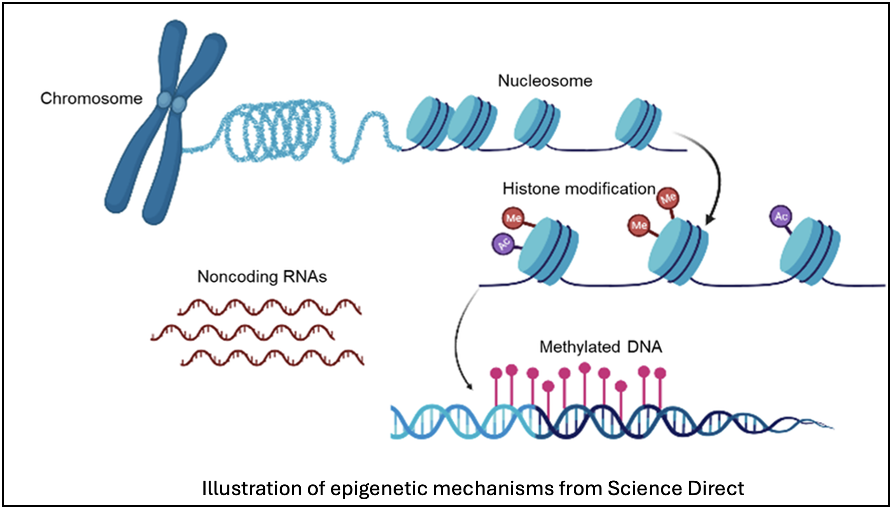

Epigenetics: A Playbook for Marine Survival
How Marine Organisms Run the Ultimate Game Plan

If you’ve ever met me, you know I’m a sports girl. A true-blue (purple), tried and true sports fan. I ride for my Baltimore Ravens, I will alter the weather for my Seattle Storm, and I freeze out those who don’t release the Kraken in the fall… but I’m also a molecular ecologist (in training) and epigenetics is my Super Bowl, my championship, my Stanley Cup; so let’s talk about it.
Epigenetics is the discipline that studies changes to the genome that aren’t permanent; they’re the temporary modifications required to make life survivable. We see it in everything living from Homo sapiens to Haliotis spp.. Let’s break it down — how marine organisms use it to survive changing oceans, and why, if you can follow a game plan, a scoring drive, or a defensive breakdown, you can absolutely follow the world of epigenetic science.
Welcome to the Arena: DNA 101

Before any game begins, you need a field. In biology, that’s DNA.
DNA is a double-stranded playbook carrying every instruction an organism needs. Within it, genes are individual plays—schemes for building proteins, running the metabolism, repairing cells, and orchestrating life itself. But here’s the twist: just because a play exists in the book doesn’t mean the team uses it every game.
And that is where epigenetics comes in.
Meet the Coaching Staff: What Is Epigenetics?

Epigenetics is the study of how organisms change gene expression without altering the DNA sequence itself. These changes are induced by the environment and allow organisms to remain plastic, flexible, and ready to win.
Coach’s Challenge: Epigenetics goes far beyond what we’ll cover today. If you want a more in-depth read, check it out here; and if that didn’t put enough dip on your chip, check out even more here.
Think of it as the coaching staff deciding which plays to run, how often, and under what conditions. Just because Pete Carroll didn’t activate Beast Mode in Super Bowl 49 doesn’t mean that Marshawn Lynch wasn’t ready to get the job done.
Marine organisms live in environments that shift dramatically due to elevated water temperatures, ocean acidification, reduced oxygen, and pollution. Many are sessile and can’t walk off the field or swap arenas, so instead, they rely on epigenetics to make on-the-fly adjustments. We’re going to focus on marine invertebrates, but if you want to know more, check out the Coach’s Challenges for where you can find more information.
Coach’s Challenge: Plasticity is pretty cool — it lets organisms withstand environmental change by quickly shifting how they respond, just like calling an audible on the field. Read more about plasticity here.
Let’s check out a few audibles available to our favorite marine organisms.

Nick Saban, Defense: DNA Methylation
Nick Saban is famous for “the process” that has built a dynasty in Alabama: focus, precision, shutting down what doesn’t serve the system and elevating what brings the team together. That’s DNA methylation: chemical tags (a.k.a. methyl groups) get added to DNA like a defensive scheme, dictating whether genes are expressed or not.
Oysters, mussels, and corals have used methylation to withstand environmental changes and alter their energy allocation during stressful events. It’s strict, strategic, and controlled. Most mammals have a ton of methylation in their genome—upwards of 70%—because we’re complex and biologically fussy, but marine invertebrates (like oysters, mussels, and corals) are just trying to meet the big basic biological goals: survive long enough to reproduce before you die. DNA methylation helps them do this.
Jessica Campbell, Agility: Histone Modifications
Histones are the proteins DNA wraps around; loosen them and gene expression can ramp up; tighten them and it can slow down. While Jessica Campbell may be the first woman coach in the NHL, she’s not new to this—she’s true to this. She’s fast, agile, and manipulates space in the barn better than most.
She’s histone modification: creating openings you didn’t see coming, or locking down a play you thought was available. Histone modifications work the same way.
Geno Auriemma, Court Vision: Chromatin Remodeling
If DNA methylation is discipline and histones are agility, chromatin remodeling is pure coaching genius. If we’re talking about coaching genius, we must be talking about 12-time NCAA champion (and champion-maker), UCONN Women’s Basketball Head Coach Geno Auriemma. Coach Auriemma doesn’t change who you are, he changes how the pieces are arranged so you shine; just ask the 45 WNBA players (26 went first pick) from his Huskies — see Bird, Taurasi, and Moore et al. for proof.
Chromatin is the molecular complex made up of DNA and proteins in the nucleus of a cell. Remodeling physically shifts entire DNA regions by putting them in either zone or stacked play (spaced out or bunched together). Marine species use this when facing extreme stress, like heat waves; they restructure their genome’s landscape the way Geno restructures an offense.
Coach’s Challenge: Histone modification is often linked to chromatin remodeling, but they are not the same — generally, histone modification is a chemical process and chromatin remodeling is a physical process.
The Utility Players: Non-Coding RNAs

Non-coding RNAs are a little less well understood, but generally, they regulate gene expression by intercepting signals, amplifying others, or turning certain genes on or off at key moments. As the least studied mechanism of epigenetics, the sky is the limit for adding to our understanding of how this mechanism works.
While not exactly coaches, think about non-coding RNAs like A’ja Wilson and Alex Ovechkin: players who are leaders, versatile, impactful, impossible to ignore. They do the gritty work that changes the outcome of the game.
Coach’s Challenge: All of these mechanisms work together in supporting the survival of marine invertebrates—kind of like the 1992 Olympic Dream Team.
Training Camp: Environmental Stressors
Coach Saban says your environment shapes your commitment. Marine organisms live that reality more literally than any athlete ever will. Since the epigenetic mechanisms we covered earlier are largely induced by the environment, their “training camps” look like marine heatwaves, ocean acidification, and pollution exposure.
These pressures trigger epigenetic responses that help organisms survive the moment or prepare their young for upcoming challenges.
In-Season Adjustments vs Building a New Team: Acclimatization vs Adaptation
Acclimatization is a short-term change, like Lewis Hamilton switching from medium compound tires to inters for rain on the track in Miami—we all know Florida rain only lasts a brief stint. Adaptation is long-term, across generations, like Ferrari designing an entirely new car concept for the next season.
Epigenetics sits between these:
- Sometimes it’s reversible, like changing tires in a race (acclimatization)
- Sometimes it influences offspring—think F2 and F3 drivers moving into F1 seats (parental effects)
- Sometimes it persists across generations—think Schumacher and Sainz (transgenerational inheritance)
Marine species often “preload” offspring with epigenetic cues so they’re ready for warming waters or increased acidity. It’s like when LeBron sends a plume of chalk into the air before a game or you hear those opening notes of Enter Sandman at a Virginia Tech football game; the ritual signals what’s to come and, just like sport, we may not always win, but we can’t win if we aren’t prepared.
When Does Acclimatization Become Adaptation?
I’m sure you’re asking: if epigenetics keeps making the same play, at what point does it become a permanent part of the playbook?
There are plenty of reasons why we would expect epigenetics to be part of the answer to how marine organisms withstand environmental changes, but there is so much more to understand before we can make such a blanket statement—I mean, there are still Dallas Cowboy fans despite evidence that they won’t see a Super Bowl anytime soon.
Coach’s Challenge: Acclimatization and adaptation feel a bit muddy because we want to think about them as distinct and different, but they are more like siblings. Think Venus and Serena Williams: Venus is adaptation, full-court strategy, while Serena is acclimatization, explosive baseline power and immediate reaction. Check out what acclimatization versus adaptation looks like in mountaineering.
Game Time: Analytics & Officiating
In the Booth: How We Know What’s Happening
Researchers use powerful tools to understand and assess each of the epigenetic mechanisms. This gets complicated quickly, so check out the Coach’s Challenge for the full debrief.
- DNA methylation – Genome-wide sequencing to see where those methyl groups are added or missing
- Histone modifications – Mass spectrometry or ChIP to show us where the modified histones sit along the genome
- Chromatin remodeling – Sequencing or bespoke assays to show where DNA is tightly or loosely packed
- Non-coding RNAs – RNA sequencing to help us identify which RNAs influence gene expression
Coach’s Challenge: Want to deep dive on the tools? See what’s really going on in the booth by exploring reviews on the methods used to understand marine systems.
Can We Trust the Call?: Officiating & Call Confirmation
Researchers work together for more than just the field work or data analysis. We also submit our evidence (papers) for review and confirmation. Just like NFL officials calling New York to review a call on the field, researchers rely on other researchers with an outside perspective to confirm our call (results) by:
- double-checking evidence
- questioning interpretation
- ensuring accuracy
- reproducing results
Coach’s Challenge: Just like refs, reviewers aren’t perfect, but the system keeps the science accountable. Learn more about how we make science open, accessible, and reproducible by exploring resources on peer review, open data, and reproducibility initiatives here.
The Expansion Era: Where Epigenetics Is Heading
Epigenetics isn’t static; it’s evolving like sports themselves. We’re entering a future of innovation in data collection methods, even more open-source data from around the globe, and innovative analysis techniques. The future is as bright as Josh Naylor’s with the Mariners!
This is the age of the rookies: Michael Penix Jr. (#GoDawgs), Matthew Schaefer, Paige Bueckers, Kimi Antonelli — athletes rewriting their sports in real time. Epigenetics is undergoing that same explosive transformation.

Add new tools, third-generation sequencing, and a wealth of open-source data—that’s just like electronic line judging in tennis (except for the French Open), the new concussion helmets in the NFL, and more investment in youth sports across the US.
We are rewriting our understanding of resilience, inheritance, vulnerability, and survival. Marine organisms are already doing it. Now, science is catching up.
Because when it comes to life on a changing planet, epigenetics isn’t just a game. It’s the whole season, the draft, the practice, the film, and the long, hard work that lets life show up ready to play when the whistle blows.